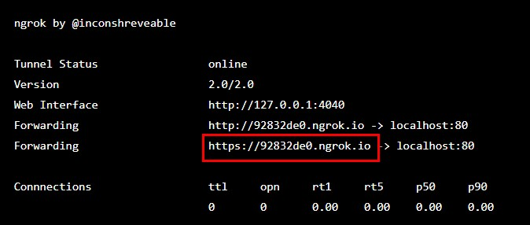

前言
在JavaScript軟體開發測試上，有時候會需要在Local端先簡單建立環境，然後進行測試。一般來說，在PC端上直接測試可能並沒有太大問題。但是當想要測試在Mobile端上時，這時候就會遇到一個情境
在Google Chrome在手機上，很多JavaScript 的 EventListener會吃不到，但是Firefox可以吃到。
因為Chrome在Mobile上，不支援Http只支援Https，Firefox則是Http & Https都進行支援。 進行平台開發需要兩種都測試的時候，面對這種狀況該怎麼辦? 這時候就可以嘗試使用第三方工具Ngrok幫忙我們了!!
Http vs Https
- Http (HyperText Transfer Protocol)
- HTTP是一個客戶端（用戶）和伺服器端（網站）之間請求和應答的標準，通常使用TCP協定。透過使用網頁瀏覽器、網路爬蟲或者其它的工具，客戶端發起一個HTTP請求到伺服器上指定埠（預設埠為80）。我們稱這個客戶端為用戶代理程式（user agent）。
- Https (HyperText Transfer Protocol Secure)
- 是一種透過計算機網路進行安全通訊的傳輸協定。HTTPS經由HTTP進行通訊，但利用SSL/TLS來加密封包。HTTPS開發的主要目的，是提供對網站伺服器的身分認證，保護交換資料的隱私與完整性。
Comparison
| Parameter | HTTP | HTTPS |
|---|---|---|
| Protocol | It is hypertext transfer protocol. | It is hypertext transfer protocol with secure. |
| Security | It is less secure as the data can be vulnerable to hackers. | It is designed to prevent hackers from accessing critical information. It is secure against such attacks. |
| Port | It uses port 80 by default | It was use port 443 by default. |
| Starts with | HTTP URLs begin with http:// | HTTPs URLs begin with https:// |
| Used for | It’s a good fit for websites designed for information consumption like blogs. | If the website needs to collect the private information such as credit card number, then it is a more secure protocol. |
| Scrambling | HTTP does not scramble the data to be transmitted. That’s why there is a higher chance that transmitted information is available to hackers. | HTTPS scrambles the data before transmission. At the receiver end, it descrambles to recover the original data. Therefore, the transmitted information is secure which can’t be hacked. |
| Protocol | It operates at TCP/IP level. | HTTPS does not have any separate protocol. It operates using HTTP but uses encrypted TLS/SSL connection. |
| Domain Name Validation | HTTP website do not need SSL. | HTTPS requires SSL certificate. |
| Data encryption | HTTP website doesn’t use encryption. | HTTPS websites use data encryption. |
| Search Ranking | HTTP does not improve search rankings. | HTTPS helps to improve search ranking. |
| Speed | Fast | Slower than HTTP |
| Vulnerability | Vulnerable to hackers | It Is highly secure as the data is encrypted before it is seen across a network. |
Table Reference By HTTP vs HTTPS: What’s the Difference?
Ngrok
Ngrok這個第三方工具，看起來會先在遠端Server建立一個Wrapper位置，協助使用者將已經建立起來的localhost位置導向這個接口，然後給予一個Https協定的遠端Server位置。 使用者可以直接利用這個Ngrok提供的新IP位置進行Https測試了。
操作流程
- 先在Local端建立起localhost:“port id”，這邊的port id要先記起來
- 去Ngrok official website下載
- 解壓縮後，執行ngrok.exe執行檔
- 根據官方教學文件，先註冊一組帳號
- 輸入 ngrok http “port id” 例如 ngrok http 80
- 然後程式會跑一下，開始建立遠端相對應IP位置，接著會顯示遠端IP位置名稱，如圖 
- 然後就可以打開瀏覽器，輸入IP位置，進行測試了